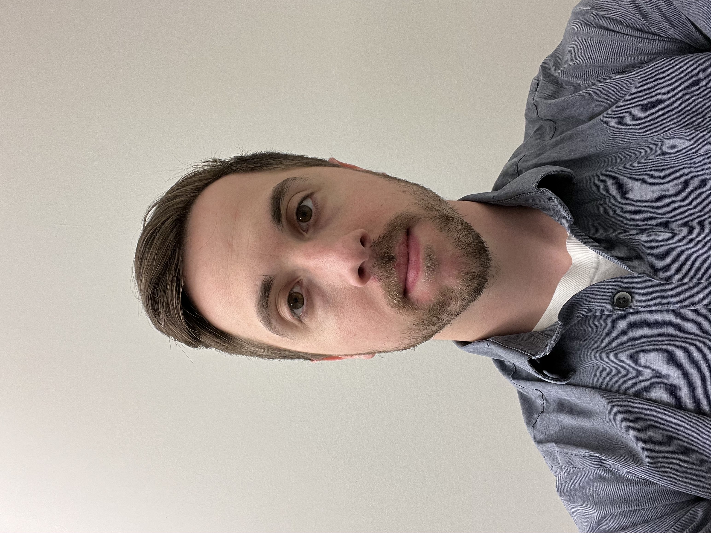

About Me

Benjamin Grinthal
I am a Rutgers University graduate with a bachelors degree in mechanical engineering and a
certificate in aerospace engineering. Over the last 10 years I have gained experience in different
engineering fields from manufacturing to quality control to design, learning the ins and outs of
each job. Through this time, I discovered a growing interest in coding, teaching myself some and
eventually enrolling in a Rutgers Coding Bootcamp course. My goal is to take the professional
experience aquired from my previous position, along with the knowledge I am gaining from this
course, to kickstart my career in coding.
Resume
Education
Bechelor of Science : Mechanical Engineering, 05/2016
Rutgers, The State University of NJ - New Brunswick, NJ
Work History
OSP Engineer 11/2021 to 04/2022 Verizon - Mount Laurel, NJ
- Managed the damage, upgrade, and installation of Verizons facilities in designated areas
- Coordinate with construction, power companies, and project managers to ensure work is completed
in a timely manner
- Work with vendors to increase production and create accurate design for construction to follow
- Represent Verizon in meetings and surveys to solve problems or to expand the network into new
locations
Design Engineer, 04/2018 to 11/2021 Byers Engineering Company Inc. - Somerset, NJ
- Design layouts for Verizon's service providing cables through large New York City streets and
buildings
- Create CAD drawings using Microsoft Visio and AutoCAD to convey manufacturing and pro- duction
configurations
- Estimate quantities and cost of materials, equipment, and labor to determine project
feasibility
- Use Google Earth and Microsoft Visio to create detailed maps from raw field data of Verizon
cable systems through New York streets
- Develop proposals for clients outlining project scope and timeline
- Provide technical guidance, peer review, and mentorship to junior engineers engaged in Fios
building designs
- Read and interpret blueprints, technical drawings, schematics, and computer-generated reports
- Travels to location to sketch/verify on field information to use for design
Design Engineer Intern, 06/2011 to 12/2016 RotorClip Company - Somerset, NJ
- Perform tolerance analysis to support success in high-volume heat treatment product
manufacturing
- Operate tensile and hardness testing machines to perform spot analysis on products
- Use Solidworks to design tools for creating company retaining rings
- Design retaining rings meeting company and customer tolerance and material standards
- Document drawing edits using Engineering Change Notices (ECN)